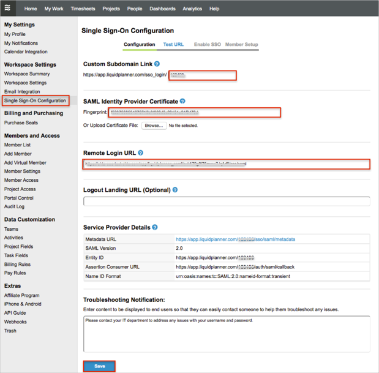
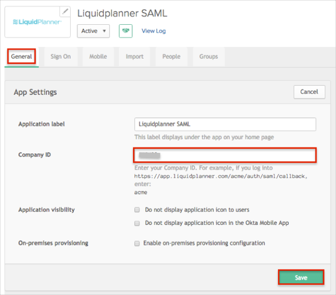
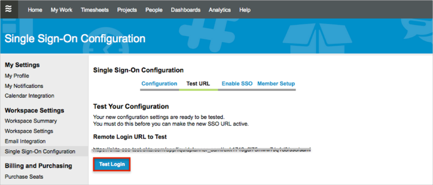
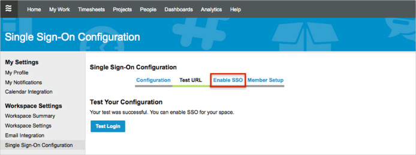
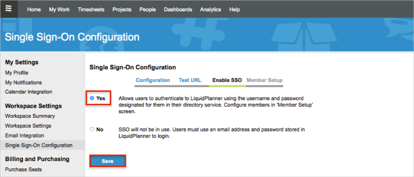
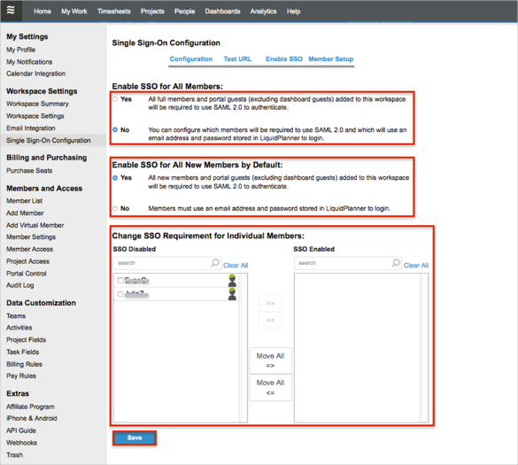
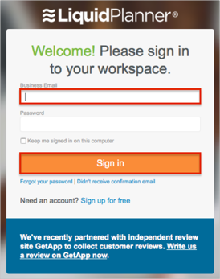

Contact the LiquidPlanner Support team and request that they enable SAML 2.0 for your account.
Login to your LiquidPlanner account as a workspace owner.
Click on our profile picture.
Select Settings > Single Sign-On Configuration.
In the Single Sign-On Configuration section, enter the following (see screen shot at end of step for reference):
For example if your Custom Subdomain Link is https://app.liquidplanner.com/sso_login/0000, you need to save the 0000 value).

In Okta, select the General tab for the LiquidPlanner app.
Click Edit.
Enter your Custom Subdomain (see step 5 above) into the Company ID field.
Click Save.

Back in LiquidPlanner, locate the Test Your Configuration section and click the Test Login button:

Wait for a Your test was successful. You can enable SSO for your space message to appear.
Click the Enable SSO link.

In the Enable SSO section:
Click Yes.
Click Save.

In the Member Setup section:
Under Enable SSO for All Members:
Select Yes if you need to all new workspace members automatically to be set up with SSO.
Select No if you need to configure which members will be required to use SAML 2.0 and which will use an email address and password stored in LiquidPlanner to login.
Under Enable SSO for All Members by Default:
Select Yes if you need to all new members and portal guests added to your workspace will be required to use SAML 2.0 to authenticate.
Select No if your members must use an email address and password stored in LiquidPlanner to login.
Under SSO Requirement for Individual Members:
Move everyone (or select required) members and click the Move All => (or >>) button.
Click Save:

Done!
Notes:
IdP-initiated flows, SP-initiated flows, and Just In Time (JIT) Provisioning are all supported.
For SP-initiated flows:
Open LiquidPlanner login page: https://app.liquidplanner.com/login.
Enter your email in the Business Email button field.
Click the Sign In button.
